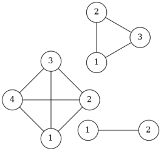

Exercices - Représentations d’un graphe¶
Un graphe simple¶
On considère le graphe ci-dessous:

Est-ce un graphe orienté ?
Quels sont les voisins de 1 ?
Construire sa matrice d’adjacence.
Combien peut-on ajouter d’arêtes à ce graphe ?
Graphe complet¶
Un graphe est dit complet si tous ses sommets sont reliés. On considère les trois graphes complets suivant:

Construire un graphe complet à 5 sommets.
Construire les matrices d’adjacence des trois graphes ci-dessus.
Combient d’arêtes comportent-ils ?
En examinant les matrices d’adjacence, déterminer le nombre maximum d’arêtes d’un graphe comportant \(n\) sommets.
Retrouver son chemin¶

Un chemin est simple s’il n’emprunte pas deux fois le même arc. Un chemin simple reliant un sommet à lui même et contenant au moins un arc est appelé un cycle.
Trouver trois chemins simples menant de A à C.
Trouver deux cycles sur ce graphe.
Modéliser une situation par un graphe¶
Tournoi de football¶
On souhaite organiser un tournoi de football avec 4 équipes (numérotées de 1 à 4). Chaque équipe rencontre une seule fois toutes les autres.
Représenter la situation sous la forme d’un graphe
Combien d’arêtes possède-t-il ? En déduire le nombre de matchs au total pour ce tournoi
En se référant à l’exercice 2, quelle propriété remarquable possède ce graphe?
Tournoi de tennis¶
Un club de tennis doit sélectionner deux joueurs parmi quatre pour représenter le club à un tournoi national. Les quatre joueurs sont notés A, B, C et D. Pour réaliser la séléction le club organise des matchs, chaque joueur rencontrant les trois autres.
Règlement:
Tout match gagné donne un point;
Tout match perdu enlève un point.
Les joueurs sélectionnés sont les joueurs ayant obtenu le plus grand nombre de points. On donne le résultat sous la forme d’un graphe orienté:
L’orientation des arcs est telle que \(X\longrightarrow Y\) signifie \(X\) a battu \(Y\).
Quels sont les deux joueurs sélectionnés ?
Réunion de famille - niveau de difficulté XXL :)¶
Michel est invité par André à un dîner de famille. Dès son arrivée, il se présente à chacune des onze autres personnes qu’il trouve dans la maison. Les onze premières phrases qu’il entend successivement sont les suivantes:
Béatrice : “Bonjour ! Je suis la mère d’André.”
Carole : “Bienvenue ! Je suis la sœur du père d’André.”
Daniel : “Salut ! Je suis le fils unique de la sœur de la mère d’André.”
Émile : “Bonjour ! Je suis l’unique beau-frère du fils de Karl.”
Fabienne : “Mère de deux filles, je suis aussi la grand-mère maternelle de Daniel.”
Gaston : “Salut ! Je suis un des fils de Lucien et un des petits-fils de Fabienne.”
Honoré : “Je suis le grand-père paternel de Lucien.”
Irène : “Je suis l’unique belle-sœur de Lucien.”
Joseph : “Salut ! Je suis le neveu de Lucien et le petit fils de Karl.”
Karl: Mon petit-fils m’a parlé de vous.
Lucien : Bienvenue dans ma maison, je vous ai vu a l’instant parler avec mon père.
Et la famille d’ajouter d’une seule voix : “si vous ne trouvez pas les liens familiaux qui nous unissent, vous n’aurez pas à dîner !”
(d’après F. Droesbeke, les graphes par l’exemple, pp 17-18 ellipses)
Aider Michel … en modélisant cette situation par un graphe.
Remarque: dans cet exercice, le beau-frère de X est le frère du mari/femme de X, et la belle-soeur la soeur du mari/femme de X.
Codage¶
On considère le graphe ci-dessous ainsi que sa matrice d’adjacence.

Questions de cours¶
Est-ce un graphe orienté ou non orienté?
Combien a-t-il de sommets? d’arêtes?
Les sommets d et h sont-ils voisins?
Implémentation en python¶
Liste d’adjacence¶
Une façon d’encoder un graphe sous Python est d’utiliser un dictionnaire contenant les listes des voisins de chaque sommet. Les clés seront les sommets du graphe et leur valeur sera la liste des sommets adjacents.
G = {
'a': ['b','c'],
'b': ['a','d', 'e'],
'c': ['a','d'],
'd': ['b','c', 'e'],
'e': ['b','d', 'f', 'g'],
'f': ['e','g'],
'g': ['e','f', 'h'],
'h': ['g']
}
Ecrire une fonction
sommetsqui prend un graphe en paramètre et qui renvoie la liste de ses sommets.Ecrire une fonction
voisinsqui prend en paramètres un graphe et un sommet et qui renvoie la liste des vosins de ce sommet.Que réalise la fonction
lst_to_mat? Expliquer notamment la portion de code située entre les lignes 9 et 12.Le résultat de l’appel
lst_to_mat(G)est-il conforme aux données de l’énoncé?
def sommets(g):
"""
à compléter
"""
pass
def voisins(g, u):
"""
à compléter
"""
pass
def lst_to_mat(g):
"""
renvoie ...
g: graphe modélisé par un dictionnaire de listes d'adjacences
"""
n = len(g)
adj = [[0] * n for _ in range(n)]
lst_som = sommets(g)
ind_som = {lst_som[i]: i for i in range(n)}
for s in lst_som:
for v in voisins(g, s):
adj[ind_som[s]][ind_som[v]] = 1
return adj
# A décommenter puis exécuter (utile pour la suite)
#A = lst_to_mat(G)
Matrice d’adjacence¶
Ecrire une fonction
adj_to_lstqui prend en paramètre une liste (de python) de sommetslet une matrice d’adjacencemat(liste de listes) et qui renvoie un dictionnaire dont les items sont de la forme:sommet: liste de voisins.
On peut s’inspirer de la fonctionlst_to_matet notamment l’utilisation d’un dictionnaire qui fait l’association index <–> nom de sommet.Donner alors, sous forme de liste d’adjacence, une représentation du graphe dont la matrice d’adjacence est la suivante:
On notera les sommets: A, B, C, D et E.
def adj_to_lst(l, mat):
"""
à compléter
"""
pass
# TESTS QUESTION 1- A DECOMMENTER ET EXECUTER
#rep = {'a': ['b', 'c'],
# 'b': ['a', 'd', 'e'],
# 'c': ['a', 'd'],
# 'd': ['b', 'c', 'e'],
# 'e': ['b', 'd', 'f', 'g'],
# 'f': ['e', 'g'],
# 'g': ['e', 'f', 'h'],
# 'h': ['g']}
#assert adj_to_lst(['a', 'b', 'c', 'd', 'e', 'f', 'g', 'h'], A) == rep
# QUESTION 2 - A DECOMMENTER, COMPLETER PUIS EXECUTER
#l = []
#mat = []
#adj_to_lst(l, mat)
Implémentation d’une classe graphe orienté par matrice d’adjacence¶
On se propose d’encapsuler les opérations réalisables sur les graphes orientés dans une classe GrapheOr. La construction repose sur l’utilisation d’une matrice d’adjacence.
class GrapheOr:
""" Une classe pour représenter les graphes orientés."""
def __init__(self, sommets):
""" sommets est la liste des sommets du graphe; ceux-ci
peuvent être des entiers ou des caractères."""
self.s = sommets
self.ma = [[0]*len(sommets) for _ in range(len(sommets))]
Ajouter une méthode
ajouter_arcqui prend deux paramètress1ets2correspondant à deux sommets (on s’assurera de leur présence dans la liste de sommets) qui permet d’ajouter un arc entres1ets2. Cette méthode ne renvoie rien.
Ajouter une méthode
arcqui prend en paramètres deux sommetss1ets2et qui renvoie un booléen correspondant à la présence ou non d’un arc entre ces deux sommets.
Ajouter une méthode
voisinsqui prend en paramètre un sommets1et qui renvoie la liste de ses voisins.
# TESTER VOS METHODES ICI
#g = GrapheOr(['a', 'b', 'c', 'd'])
#g.ajouter_arc('a', 'b')
#g.ajouter_arc('a', 'd')
#g.ajouter_arc('b', 'c')
#g.ajouter_arc('d', 'a')
Implémenter une classe
GrapheOr2qui utilise un dictionnaire de listes d’adjacence. L’interface restant rigoureusement la même.
# TESTS - A DECOMMENTER ET EXECUTER
#g = GrapheOr2(['a', 'b', 'c', 'd'])
#g.ajouter_arc('a', 'b')
#g.ajouter_arc('a', 'd')
#g.ajouter_arc('b', 'c')
#g.ajouter_arc('d', 'a')
#assert g.voisins('a') == ['b', 'd']
#assert g.voisins('c') == []